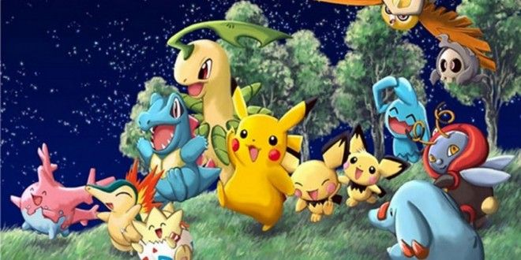
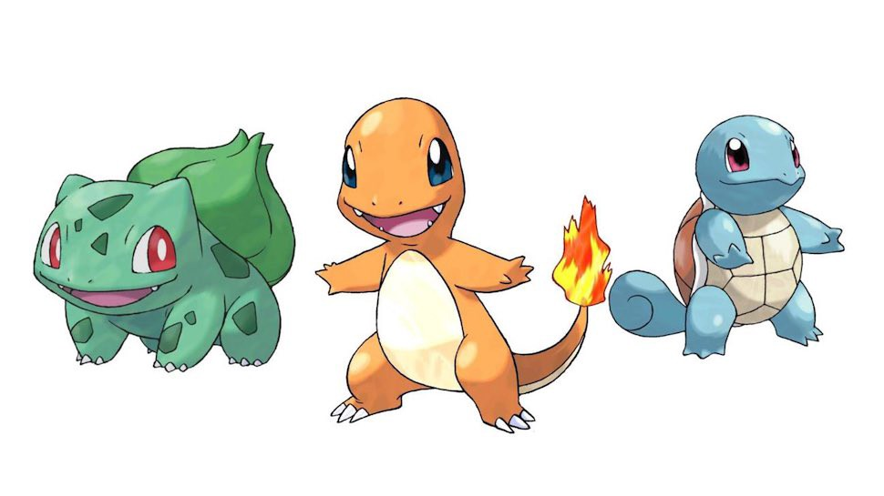

Information
If you are in your late twenties or early thirties then you were around for the start of the now widely known game and collections of Pokemon. It has been around now for 25 years as this year of 2021 being the 25th anniversary.
There are hundreds and hundreds of Pokemon that you can collect across many platforms. From video games, to card games, to mobile apps there are so many ways to play the game and collect them all.
